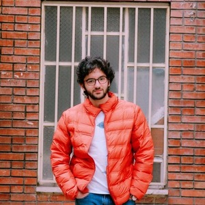

Who I am and What Have I Done!
Summary
Just a student and researcher with a nack for programming specially web development and AI engineering.
Education
- Bachelor of Aerospace Engineering at Amirkabir University of Technology
- studying master of Renewable Energy at Cranfield University
Skills
-
Hard Skills
- Programming Languages: Python, Matlab, C, Cpp
- Web Development: HTML, CSS
- AI Engineering: scikit-learn, OpenCV, encoders
- Data Analysis: Pandas, NumPy, Matplotlib, Seaborn
- Version Control: Git, Github
- Aerospace Specific: OpenFoam, ANSYS Fluent, AUTOCAD, Solidworks, Siemens NX
- Office Applications: Word, Powerpoint, Excel
- Language Skills: Persian(Native), English(C2 Level, Fluent and experianced), German(A2 Level) and Norwegian(Just started learning)
-
Soft Skills
- Problem Solving
- Teamwork
- Communication
- Adaptability
- Time and Project Management
Work Experience
-
Research Internship at Mehr Energy Exploration and Production (September 2023 - August 2025)
-
Head Barista at Kogan Coffee Studio (Formerly known as Coffee Studio) (July 2022 - October 2022)
-
Academic Internship at Amirkabir University Research Centre (July 2021 - October 2021)
Means of Contact
My Hobbies